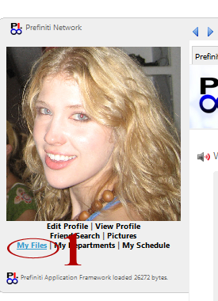
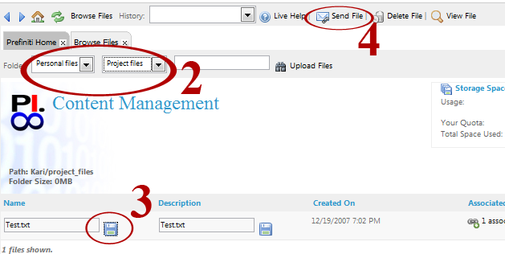
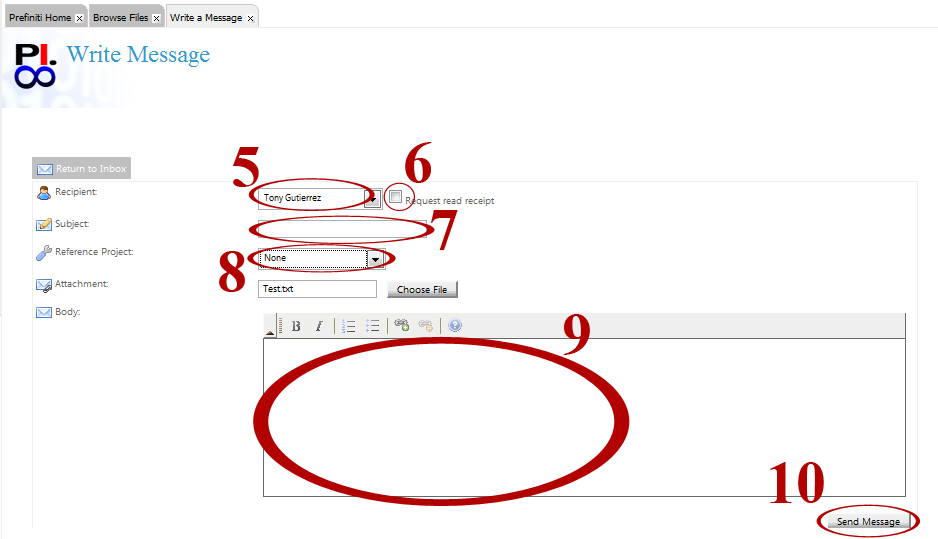

Click on 'My Files' as shown in picture (step 1). A new 'Browse Files' tab will open.

Use the drop down menus to locate the file you wish to delete (step 2). Select the the file or photo you wish to send (step 3). Select 'Send File' (step 4). A new 'Write a Message' tab will open.

Use the 'Recipient' drop down menu to select a recipient (step 5). Check 'Request read receipt' if you want confirmation that your email has been viewed by the recipient (step 6). Enter a subject in the 'Subject' field (step 7). If you would like to reference a project in your email, use the 'Reference Project' drop down menu to select the desired project (step 8). Your file is already attached in the 'Attachment' field. Write the content of your email in the 'Body' field (step 9). When you are finished click the 'Send Message' button (step 10).
